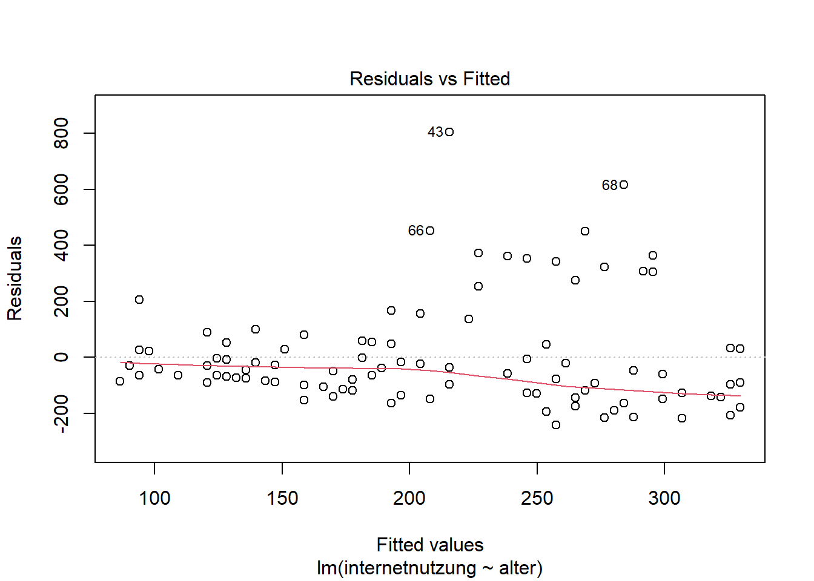
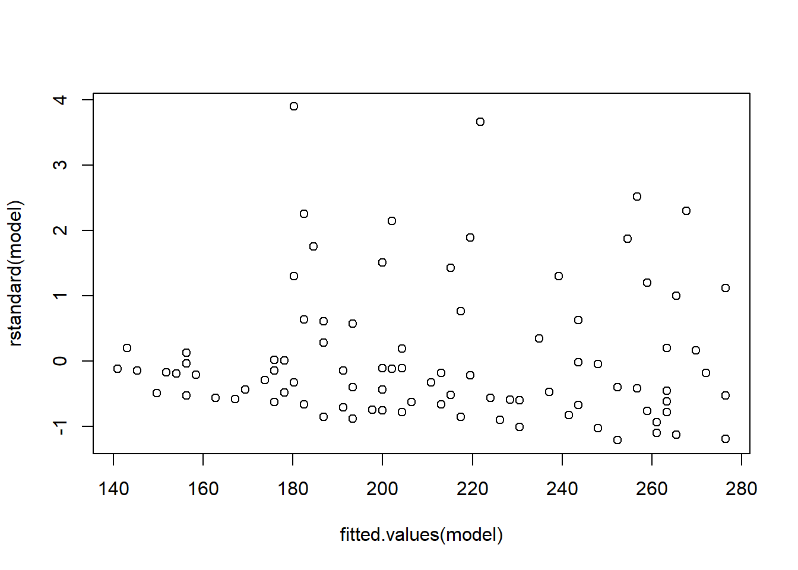
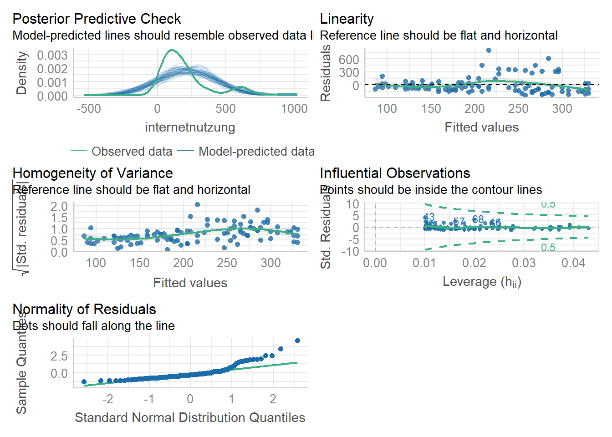

Zusammenhänge bei mehr als zwei Variablen mit der multiplen Regression
Author
Stephanie Geise
Das Überprüfen von Zusammenhängen bei mehr als zwei Variablen
1 Das Überprüfen von Zusammenhängen bei mehr als zwei intervalskalierten Variablen
1.1 Analyselogik, Ziel und Einsatzgebiete einer multiplen Regressionsanalyse
In diesem Notebook gehen wir (wie angekündigt) zunächst näher auf die Prüfung der Voraussetzungen einer Regressionsanalyse ein. Dann lernen wir die multiple lineare Regression kennen, die es erlaubt, Zusammenhänge zwischen mehreren x-Variablen und einer y-Variablen zu analysieren.
1.1.1 Vorbereitung und Laden der Daten
Zunächst laden wir wieder die Pakete des tidyverse und das Pakete broom um die normale Ausgabe der Funktion lm (für die Berechnung linearer Modelle) in ein etwas anschaulicheres Format umwandeln zu können. Außerdem laden wir das Paket performance, dass wir für die Voraussetzungsprüfung brauchen, sowie die Pakete lmtest und sandwich, mit der wir fehlende Voraussetzungen korrigieren können (siehe unten). Die Regression rechnen wir wieder auf Basis des ESS8_vier_laender-Datensatzes, den wir entsprechend einlesen:
Code
#Laden der notwendigen Pakete#install.packages("lm.beta")#install.packages("lmtest")#install.packages("broom") #install.packages("performance")#install.packages("see")#install.packages("sandwich")library(tidyverse)
── Attaching core tidyverse packages ──────────────────────── tidyverse 2.0.0 ──
✔ dplyr 1.1.2 ✔ readr 2.1.4
✔ forcats 1.0.0 ✔ stringr 1.5.0
✔ ggplot2 3.4.2 ✔ tibble 3.2.1
✔ lubridate 1.9.2 ✔ tidyr 1.3.0
✔ purrr 1.0.1
── Conflicts ────────────────────────────────────────── tidyverse_conflicts() ──
✖ dplyr::filter() masks stats::filter()
✖ dplyr::lag() masks stats::lag()
ℹ Use the conflicted package (<http://conflicted.r-lib.org/>) to force all conflicts to become errors
Code
library(lm.beta)
Warning: Paket 'lm.beta' wurde unter R Version 4.3.1 erstellt
Code
library(broom) # hier stecken einige Befehle zur Bereinigung der Daten und der Modelloutputs drin
Warning: Paket 'broom' wurde unter R Version 4.3.1 erstellt
Code
library(performance)
Warning: Paket 'performance' wurde unter R Version 4.3.1 erstellt
Code
library(see)
Warning: Paket 'see' wurde unter R Version 4.3.1 erstellt
Code
library(lmtest)
Warning: Paket 'lmtest' wurde unter R Version 4.3.1 erstellt
Lade nötiges Paket: zoo
Warning: Paket 'zoo' wurde unter R Version 4.3.1 erstellt
Attache Paket: 'zoo'
Die folgenden Objekte sind maskiert von 'package:base':
as.Date, as.Date.numeric
Code
library(sandwich)
Warning: Paket 'sandwich' wurde unter R Version 4.3.1 erstellt
Code
#Daten laden und zum Datenobjekt "daten" zuweisendaten <-read_rds("Datensatz/ESS8_vier_laender.rds")#Visualisierungshintergrund der Grafiken in ggplot festlegentheme_set(theme_minimal())# Anzeige der p-Werte als Zahlen mit Nachkommastellen einstellenoptions(scipen =999)
1.1.2 Data Management
Als abhängige Variable nutzen wir für unser Regressionsmodell wieder die Internetnutzung (netustm); als unabhängige Variablen schauen wir uns wie beim letzten Mal das Alter, sowie heute zusätzlich die Rezeptionszeit von politischen Nachrichten (nwspol) sowie das Geschlecht der Befragten (gndr) an. Damit der Output etwas nachvollziehbarer wird, benennen wir diese Variablen mit dem rename-Befehl um.
Dann setzen wir den drop_na-Befehl, um alle Fällen mit fehlenden Werten zu entfernen (in der Klammer spezifizieren wir wieder, auf welche Variablen sich der Befehl beziehen soll). Das modifizierte Datenset weisen wir einem neuen Datenobjekt zu: daten_mod2
Schließlich nutze ich den slice_sample-Befehl, um aus unseren 8432 Fällen ein Zufallssample von n=100 Fällen zu ziehen, weil mir das die visuelle Interpretation erleichtert (diesen Befehl könnten wir hier auch weglassen, dann bekommen wir unten aber sehr sehr viele Datenpunkt in unserem Streudiagramm - probieren Sie es mal aus!)
# A tibble: 100 × 166
idno cntry gender alter marsts edubde1 eduade2 eduade3
<dbl> <fct> <fct> <dbl> <fct> <fct> <fct> <fct>
1 10008368 DE Female 17 None of these (NEVER ma… (Noch)… Kein H… Kein b…
2 1834 SE Male 48 None of these (NEVER ma… <NA> <NA> <NA>
3 3551 FR Male 48 <NA> <NA> <NA> <NA>
4 1231 FR Female 35 None of these (NEVER ma… <NA> <NA> <NA>
5 2164 SE Male 42 None of these (NEVER ma… <NA> <NA> <NA>
6 2817 FR Female 23 None of these (NEVER ma… <NA> <NA> <NA>
7 591 SE Male 70 <NA> <NA> <NA> <NA>
8 1135 SE Male 60 <NA> <NA> <NA> <NA>
9 3556 FR Male 17 None of these (NEVER ma… <NA> <NA> <NA>
10 100004408 GB Male 77 <NA> <NA> <NA> <NA>
# ℹ 90 more rows
# ℹ 158 more variables: politische_Nachrichtenrezeption <dbl>, netusoft <fct>,
# internetnutzung <dbl>, ppltrst <dbl>, pplfair <dbl>, pplhlp <dbl>,
# polintr <fct>, psppsgva <fct>, actrolga <fct>, psppipla <fct>,
# cptppola <fct>, trstprl <dbl>, trstlgl <dbl>, trstplc <dbl>, trstplt <dbl>,
# trstprt <dbl>, trstep <dbl>, trstun <dbl>, vote <fct>, prtvede1 <fct>,
# prtvede2 <fct>, contplt <fct>, wrkprty <fct>, wrkorg <fct>, badge <fct>, …
1.1.3 Erinnerung: Einfache lineare Regression mit Alter als UV und Internetnutzung als AV mit lm (=linear models)
Code
model <-lm(internetnutzung ~ alter, data = daten_mod) summary(model) # klassischer Output mit relevanten Kennzahlen
Call:
lm(formula = internetnutzung ~ alter, data = daten_mod)
Residuals:
Min 1Q Median 3Q Max
-242.44 -120.64 -58.85 46.57 804.39
Coefficients:
Estimate Std. Error t value Pr(>|t|)
(Intercept) 386.729 50.953 7.590 0.0000000000188 ***
alter -3.803 1.039 -3.659 0.00041 ***
---
Signif. codes: 0 '***' 0.001 '**' 0.01 '*' 0.05 '.' 0.1 ' ' 1
Residual standard error: 192.3 on 98 degrees of freedom
Multiple R-squared: 0.1202, Adjusted R-squared: 0.1112
F-statistic: 13.39 on 1 and 98 DF, p-value: 0.0004104
Code
#summary(lm.beta(model)) # klassischer Output mit relevanten Kennzahlen erweitert um standardisierte beta-Koeffizienten
Mit diesem Regressionsmodell haben wir übeprüft, ob das Alter die Internetnutzung erklären kann. Im Output sehen wir, dass das Alter einen signifikanten negativen Einfluss auf die Internetnutzung. Je älter ein Nutzer ist, desto weniger nutzt er das Internet. Die Regressionsanalyse lässt dabei auch eine Quantifizierung dieses Zusammenhangs zu: Mit jeder Einheit, in der die unabhängige Variable Alter steigt (hier: mit jedem Jahr Alter), nimmt die unabhängige Variable Internetnutzung um “den Estimate-Wert” in Messeinheiten (hier: -4.296 Minuten) ab. Dieser Zusammenhang ist mit p > .05 statistisch signifikant.
Soweit die Wiederholung. Beginnen wir nun mit dem Teil A dieses Skripts, nämlich der Prüfung der Voraussetzungen einer Regressionsanalyse. Vielleicht wundern Sie sich, warum wir die Voraussetzungen erst im zweiten Schritt prüfen? Sie haben Recht: Eigentlich würden wir erst die Voraussetzungen prüfen, dann das Modell schätzen. Wenn wir unser Modell aber schon geschätzt haben, können wir Funktionen zur Prüfung der Voraussetzungen auf unser gesamtes Modell anwenden (bzw. auf das entsprechende Datenobjekt “model”) - und das erspart uns eine Menge “Handarbeit” mit vielen kleinen Zwischenschritten. Zum Beispiel müssten wir für die Prüfung der Voraussetzungen, die die Residuen betreffen, diese erst einmal berechnen und in einer neuen Variable abspeichern. Es ist also weniger Aufwand, die Voraussetzungen ex post zu prüfen.
1.1.4 Erinnerung: Voraussetzungen der einfachen linearen Regression:
Bevor wir zum statistischen Teil kommen, lassen Sie uns noch einmal Revue passieren, was die wichtigsten Voraussetzungen der einfachen linearen Regression sind: 1) (quasi-)metrisches Skalenniveau 2) Linearität des Zusammenhangs zwischen x und y 3) Homoskedastizität der Residuen: Varianzen der Residuen der prognostizierten abhängigen Variablen sind gleich 4) Unabhängigkeit der Residuen: ansonsten Autokorrelation, die Aussagekraft reduziert 5) Normalverteilung der Residuen 6) Keine Ausreißer in den Daten, da schon einzelne Ausreißer einen sonst signifikanten Trend zunichte machen können (ggf. also eliminieren)
1.1.5 TEIL A: Prüfung der Voraussetzungen einer Regressionsanalyse
1.1.5.1 Prüfung der Voraussetzungen 1 und 2: metrisches Skalenniveau & Linearität des Zusammenhangs
Ob 1.) die Variablen, die wir in das Regressionsmodell einbeziehen wollen (Alter, Internet-Nutzung) metrisch sind, und ob 2.) ein linearer Zusammenhang besteht, haben wir in der letzten Woche bereits überprüft. Für die Prüfung nach der Linearität des Zusammenhangs zwischen x und y hatten wir ein Streudiagramm mit der geschätzten Regressionsgeraden erzeugt.
1.1.5.2 Prüfung der Voraussetzungen 3: Homoskedastizität der Residuen
Lineare Modelle setzen eine konstante Fehlervarianz (Homoskedastizität) voraus. Eine weitere Bedingung der Regressionanalyse ist also, dass die Varianzen der Residuen der prognostizierten abhängigen Variablen für alle Werte des Prädiktors gleich sind, so dass das Modell gleich gute Vorhersagen über alle Werte machen kann. Liegt Homoskedastizität vor, sind die Abweichungen der vorhergesagten Werte von den gemessenen Werten konstant gleich groß – unabhängig wie hoch oder niedrig der Wert des Prädiktors ist. Das ist eine wichtige Voraussetzung, denn das Gegenteil - Heterokedastizität der Residuen - würde zur Ineffizienz unserer Schätzung führen! Denn die Standardfehler der Regressionskoeffizienten werden bei vorhandener Heteroskedastizität nach oben verzerrt geschätzt. Das Ergebnis wäre, dass unser Regressionsmodell mit seiner Vorhersage systematisch umso weiter daneben liegt, je größer der Prädiktorwert ist, für den wir die abhängige Variable schätzen wollen.
Das klingt kompliziert? Kann sein, aber keine Panik: Mit der Funktionen check_heteroscedasticity() aus dem performance-package können wir sehr einfach prüfen, ob diese Annahme verletzt wurde.
Die Interpretation des Outputs ist einfach, weil R hier uns eine sehr konkrete Aussage zur Überpüfung der Annahme macht: Bei grüner Schrift ist das Ergebnis in Ordnung, d.h. die Fehlervarianz scheint homoskedastisch, denn p wäre dann nicht signifikant. Bei roter Schrift ist die Fehlervarianz heteroskedastisch und p ist signifikant (p < 0.05). In diesem Fall liegt unser Regressionsmodell mit seiner Vorhersage systematisch umso weiter daneben, je größer der Prädiktorwert ist, für den wir die abhängige Variable schätzen wollen. Das müssen wir dann bei der Interpretation der Daten berücksichtigen.
Wie das ganze aussieht, können wir uns auch grafisch über die plot-Funktion anschauen. Dazu erzeugen wir ein Streudiagramm, das die vorhergesagten Werte und die Residuen enthält:
Code
plot(model, 1)

Code
plot(fitted.values(model), rstandard(model))

1.1.5.3 Was sehen wir im Plot?
Zunächst betrachten wir die Streuung der Punkte im Streudiagramm ohne Linie. Hier können wir bereits sehen, dass eine Zunahme der Streuung bei höheren Werten erkennbar ist, weil wir einen leicht nach rechts geöffneten Trichter haben. Das zweite Diagramm hilft zusätzlich mit einer roten Linie, die bei Homoskedastizität möglichst gerade wird. Ist sie wellig oder hat sie eine positive oder negative Steigung, können wir von Heteroskedastizität ausgehen. Genauere Auskunft gibt aber der oben gerechnete Test!
1.1.5.4 Was tun bei Heteroskedastizität der Residuen? Berechnung von HC-Standard Errors!
Liegt Heteroskedastizität vor, müssen Sie nicht verzweifeln: Erstens ist die Regressionsanalyse sehr robuts gegen die Verletzung ihrer Voraussetzungen. Zweitens können wir diesen Konflikt einigermaßen elegant auflösen, indem wir pauschal robuste Standardfehler schätzen lassen, so dass die Verletzung nicht mehr zu Schätzfehlern führt. In R gibt es (wie immer) verschiedene Wege Heteroskedastizität zu kontern. Eine einfache Lösung bietet das lmtest-Paket mit der coeftest-Funktion in Kombination mit dem Befehl vcov(), der zur Berechnung von heteroscedasticity consistent (HC) standard errors führt. So ermöglichen wir die Berechnung von heteroskedastizitätskonsistenten bzw. heteroskedastizitätsrobusten Schätzern. Nutzen wir diese Lösung, werden die Standardfehler nicht mehr verzerrt und damit auch nicht die t-Werte und p-Werte unserer Schätzung.
PS: Zur Berechnung von heteroscedasticity consistent (HC) standard errors gibt es verschiedene HC-Funktionen. Hier nutzen wir zunächst Typ 3, die auch Hayes & Cai empfehlen (Hayes, A. F., & Cai, L. (2007): Using heteroskedasticity-consistent standard error estimators in OLS regression: An introduction and software implementation. Behavior research methods, 39(4), 709-722). HC4 (die zweite Variante) ist dann sinnvoll, wenn die Residuen nicht normalverteilt sind. (Wie wir später sehen werden, ist das bei uns leider auch der Fall)
Code
coeftest(model, vcov =vcovHC(model, type ="HC3"))
t test of coefficients:
Estimate Std. Error t value Pr(>|t|)
(Intercept) 386.72912 51.86565 7.4564 0.00000000003596 ***
alter -3.80262 0.84009 -4.5264 0.00001688258964 ***
---
Signif. codes: 0 '***' 0.001 '**' 0.01 '*' 0.05 '.' 0.1 ' ' 1
Code
#coeftest(model, vcov = vcovHC(model, type = "HC4")) # diese Variante wählen, wenn Residuen nicht normalverteilt sind
Nach der Ausführung erhalten wir eine neue Regressionstabelle. Wenn Sie diese Tabelle mit dem obigen Output unseres Regressionsmodells abgleichen, sehen Sie, dass sich die eigentlichen Koeffizienten (“Estimates”) nicht verändert haben - aber alle Werte, die rechts davon stehen, also Standardfehler (Std. Error), t-Werte und p-Werte. Diese sind nun um unsere Schätzfehler durch Heteroskedastizität korrigiert.
Also weiter geht’s!
1.1.5.5 Prüfung der Voraussetzungen 3: Unabhängigkeit der Residuen
Auch die Annahme, dass die Residuen unabhängig voneinander sind, ist eine wichtige Voraussetzung der Regressionsanalyse. Unabhängigkeit der Residuen bedeutet inhaltlich: Wenn ich den Fehlerterm für eine bestimmte Beobachtung kenne, darf mir das keine Information über den Fehlerterm für die nächste Beobachtung liefern. Es darf also nichts systematisch zu einer Verzerrung meiner Beobachtungen (bzw. meiner Fehlerterme) führen. Ansonsten läge eine Autokorrelation der Fehlerterme vor, die die Aussagekraft des Modells reduzieren würde.
Das performance-package ist einfach soooo cool! Es beinhaltet auch die check_autocorrelation-Funktion, mit der wir diese Annahme sehr einfach prüfen können:
Code
check_autocorrelation(model)
OK: Residuals appear to be independent and not autocorrelated (p = 0.658).
Auch hier ist der Output wieder sehr klar: Die Prüfung ergibt, dass die Residuen unabhängig und nicht autokorreliert sind (p = 0,588) - sonst hätten wir auch hier einen signifikanten p-Wert erhalten. Prima!
1.1.5.6 Prüfung der Voraussetzungen 4: Normalverteilung der Residuen
Wenn die Residuuen nicht der Normalverteilungskurve folgen, sondern stattdessen eigene “Muster” in ihrer Verteilung aufweisen, kann dies darauf hindeuten, dass wir nicht alle Prädiktoren im Modell berücksichtigt haben und somit ein Teil der erklärenden Information in die Residuen übergeht, wo sie das erkennbare Muster “verursacht”.
Auch die Voraussetzung, dass die Residuen normalverteilt sein sollen, lässt sich mit einer Funktion aus dem performance-Package sehr einfach überprüfen:
Code
check_normality(model)
Warning: Non-normality of residuals detected (p < .001).
Auch hier ist das Ergebnis ohne Probleme zu interpretieren, weil R hier eine “direkte Ansage” macht. In unserem Fall ist die Voraussetzung der Normalverteilung verletzt, weil p signifikant wird. Das müssen wir bei der Interpretation der Daten berücksichtigen. Grundsätzlich können wir hier wieder darauf verweisen, dass die Regressionsanalyse robust gegen die Verletzung ihrer Voraussetzungen ist. Eine Alternative ist, dass wir ein Bootstrapping-Verfahren auf unsere Daten anwenden. Das aber nur zur Info, wenn Sie hier selbstständig weitermachen wollen - das würde jetzt etwas zu weit führen :) Außerdem werden wir unten bei der zusätzlichen visuellen Inspektion mit der Funktion check_models auch noch sehen, dass unsere Annahme nicht allzu schlimm verletzt ist.
1.1.5.7 Prüfung der Voraussetzungen 5: Ausreißer im Modell
Ausreißer sind ein Problem für viele parametrische Verfahren, denn einzelne Ausreißer können einen sonst signifikanten Trend zunichte machen (ggf. also eliminieren). Ob es in unserem Modell Ausreißer gibt, kann ich wieder mit einer sehr einfachen Funktion aus dem performance-Package prüfen, die auf das sogenannte “cooks distance” zurückgreift. Der Wert gibt mir Auskunft darüber, welchen Einfluss mögliche Ausreißer auf das Modell haben.
Code
check_outliers(model)
OK: No outliers detected.
- Based on the following method and threshold: cook (0.7).
- For variable: (Whole model)
In unserem Fall gibt es keine Ausreißer, die das Modell beinträchtigen - vielleicht hätten wir sonst auch keinen signifikanten Zusammenhang beobachten können.
1.1.5.8 Add-on: Visuelle Inspektion der Modellgüte bzw. der Modellannahmen
Es gibt im performance-Package auch eine sehr coole Funktion, die mir eine visuelle Inspektion meiner Modellgüte bzw. verschiedenen Modellannahmen erlaubt (Normalität der Residuen, Normalität der zufälligen Effekte, lineare Beziehung, Homogenität der Varianz, Multikollinearität). Mit der check_model-Funktion kann ich mir dazu mehrere Grafiken im Überblick ausgeben lassen. YEAH! :)
Code
check_model(model)
Not enough model terms in the conditional part of the model to check for
multicollinearity.

1.1.6 TEIL B: Die multiple lineare Regression
1.1.6.1 Anwendungsbereich der multiplen linearen Regression
Die multiple lineare Regressionsanalyse wird angewandt, wenn geprüft werden soll, ob ein (als linear vermuteter) Zusammenhang zwischen metrischen Variablen besteht. Die multiple lineare Regressionsanalyse hat das Ziel, eine abhängige Variable (y) mittels mehrerer unabhängigen Variablen (x1, x2, …) zu erklären. (Zur Erinnerung: Für nur eine x-Variable nutzen wir die einfache lineare Regression)
Mit Hilfe der Regressionsanalyse können drei Arten von Fragestellungen untersucht werden: 1) Ursachenanalyse: Gibt es einen Zusammenhang zwischen den unabhängigen und der einen abhängigen Variable? Wie stark ist dieser? 2) Wirkungsanalyse: Wie verändert sich die abhängige Variable bei einer Änderung der unabhängigen Variablen? 3) Prognose: Können die Messwerte der abhängigen Variable durch die Werte der unabhängigen Variablen vorhergesagt werden?
Die multiple Regression entspricht in ihrer Analyslogik also der einfachen linearen Regression - nur dass sie mehr als eine unabhängige Variable berücksichtigt.
1.1.6.2 Ziel der Analyse
Mit Hilfe der multiplen Regression wollen wir die Annahme prüfen, dass die Variablen Alter (agea) sowie die Rezeptionszeit von politischen Nachrichten (nwspol) der Befragten einen Einfluss auf die Internetnutzung (netustm, in Minuten) haben bzw. diese erklären und vorhersagen können. Alle Variablen sind metrisch und erfüllen damit die Voraussetzung, dass eine Regression gerechnet werden kann. (Achtung: auch kategorische Variablen können bei der Regressionsanalyse eingesetzt werden, sie müssen dann aber durch Dummy-Coding passend gemacht werden).
1.1.6.3 Modell zum Zusammenhang von Alter, politischer Nachrichtenrezeption und Internetnutzung spezifizieren und anzeigen lassen
Die Berechnung der multiplen Regression unterscheidet sich nicht stark von der Berechnung der einfachen linearen Regression. In die bereits bekannte Regressionsfunktion lm() fügen wir im hinteren Teil (d.h. hinter der Tilde) einfach die zusätzliche unabhängige Variable (politische_Nachrichtenrezeption) ein, indem wir sie mit einem + Zeichen anhängen:
Code
model_m <-lm(internetnutzung ~ alter + politische_Nachrichtenrezeption, data = daten_mod)summary(lm.beta(model_m))
Call:
lm(formula = internetnutzung ~ alter + politische_Nachrichtenrezeption,
data = daten_mod)
Residuals:
Min 1Q Median 3Q Max
-238.73 -125.00 -58.46 48.47 807.40
Coefficients:
Estimate Standardized Std. Error t value
(Intercept) 388.7652 NA 51.0342 7.618
alter -4.0829 -0.3722 1.0826 -3.771
politische_Nachrichtenrezeption 0.1260 0.0920 0.1352 0.932
Pr(>|t|)
(Intercept) 0.0000000000173 ***
alter 0.000279 ***
politische_Nachrichtenrezeption 0.353583
---
Signif. codes: 0 '***' 0.001 '**' 0.01 '*' 0.05 '.' 0.1 ' ' 1
Residual standard error: 192.4 on 97 degrees of freedom
Multiple R-squared: 0.128, Adjusted R-squared: 0.11
F-statistic: 7.118 on 2 and 97 DF, p-value: 0.001304
1.1.6.4 Interpretation des Outputs: Was sehen wir in der Regressionstabelle?
Unter Call wird zunächst noch einmal das Regresssionsmodell beschrieben, das wir hier berechnet haben. In diesem versuchen wir auf Basis des Datensatzes “daten_mod” die abhängige Variable “internetnutzung” durch die unabhängigen Variablen “alter” und “politische_Nachrichtenrezeption” zu erklären.
1.1.6.5 Residuen
Unter Resdiuen erhalten wir Informationen zur Verteilung der Residuen. Diese geben die Abweichung der beobachteten Werte von den durch das Regressionsmodell erwarteten Werten an.
Coefficients: #### Intercept Das Intercept definiert den Schnittpunkt der Regressionsgeraden mit der y-Achse (theoretischer Wert für y, wenn x den Wert 0 annimmt).
1.1.6.6 Estimate
Die Estimates sind die unstandardisierte b-Werte. Das sind die Werte, die zur Vorhersage in die Regressionsgleichung eingetragen werden (könnten).
1.1.6.7 Standardized
Diese Estimates sind die standardisierte b-Werte. Weil wir diese über die lm.beta-Funktion standardisiert haben, lassen sich die Koeefizienten auch bei unterschiedlicher Skalierung vergleichen.
1.1.6.8 St. error
Hiermit wird der Standard-Fehler der unstandardisierten b-Werte ausgegeben.
1.1.6.9 t-value
Der t-value gibt den t-Wert des Modells an (Koeffizient / Standardfehler)
1.1.6.10 p-value
Der p-value ist für uns von besonderem Interesse - das ist der Signfikanzwert des Modells (unten mit Signfikanzsschwellen) bzw. des statistischen Zusammenhangs
1.1.6.11 R-squared
Auch beide R-Werte (R2, Adjusted R2) sind von zentraler Bedeutung für die Interpretation: R2 gibt uns die erklärte Gesamtvarianz des Modells der abhängigen Variable an, also die “Erklärungskraft” der unabhängigen Variable Alter und politische Nachrichtenrezeption auf die abhängige Internetnutzung. Zur Interpretation bietet es sich an, R2 als Prozentwert mit 100 zu multiplizieren. Wir können hier dann daraus lesen, dass das Alter und die politische Nachrichtenrezeption etwa 20 Prozent der Varianz der Internetnutzung erklärt. Das ist nicht super viel, aber auch nicht nichts. Wir können daraus aber auch ableiten, dass - neben dem Alter - noch andere Einflussfaktoren die Internetnutzung mitbestimmen müssen. Übrigens: Das R2 könnte theoretisch maximal den Wert 1 annehmen, dann hätten wir eine 100% Erklärung der abhängigen Variable durch die unabhängige Variable (=> das kommt aber in der Realität aber fast nicht vor)
1.1.6.12 Adjusted R2
Wie der Name schon sagt bezeichnet Adjusted R2 die Anpassung des Modells, wobei für die Anzahl der aufgenommenen Variablen korrigiert wird (“Strafterm für viele aufgenommene Variablen”). Das Adjusted R2 ist daher immer schlechter als R2.
1.1.6.13 F-Statistik
Auch die F-Statistik ist wichtig: Sie gibt uns nämlich die Signfikanz des Gesamtmodells an (nicht einzelner Variablen wie bei R2!)
1.1.6.14 Inhaltliche Interpretation: Was bedeutet das jetzt also alles?
Der Output zeigt uns: Das Alter hat einen negativen Einfluss auf die Internetnutzung. Je älter ein Nutzer ist, desto weniger nutzt er das Internet. Mit jeder Einheit, in der die unabhängige Variable Alter steigt (hier: mit jedem Jahr Alter), nimmt die unabhängige Variable Internetnutzung um (-4.9169) Messeinheiten (hier: Minuten) ab. Dieser Zusammenhang ist mit p < .05 statistisch signifikant. Diese Ergebnisse überraschen uns nicht: Den Einfluss des Alters haben wir ja letzte Woche schon überprüft. Mit der Erweiterung zur multiplen Regression können wir nun zusätzlich sagen, dass die politische Nachrichtenrezeption auch einen Einfluss auf die Internet-Nutzung hat, denn der Wert ist ebenfalls signifikant (p < .05)! Die F-Statistik sagt uns zusätzlich, dass auch unser Gesamtmodell signifikant ist (p-value: 0.00001239, also < .05).
1.1.6.15 Erinnerung: Zusatzfunktionen zur schöneren Ergebnisdarstellung durch das Paket broom
1.2.1 Vorbereitung der Daten zum Zusammenhang von Alter, Bildung, Geschlecht und Internetnutzung
Nun wollen wir noch Geschlecht (gndr) als unabhängige Variable mit in unser Regressionsmodell aufnehmen. Bei Gender haben wir aber das Problem, dass diese Variable nicht metrisch skaliert ist! Es handelt sich vielmehr um eine kategoriale Variable. Wie Sie schon gelernt haben, können Sie diese mit einem “Trick” ebenfalls in die Regressionsanalyse einbringen - Sie müssen diese dann aber durch Dummy-Coding passend machen. Wir wollen uns hier mal anschauen, wie das funktioniert. Dazu müssen wir die Variable mittels mutate-Befehl erst einmal umcodieren.
Durch die Dummy-Codierung wird die kategoriale Variable in zwei Gruppen übersetzt, von denen die eine mit 1 und die andere mit 0 codiert wird. Die Gruppe, der der Wert 0 zugeordnet wird, ist dann die Referenzkategorie. In unserem Beispiel Beispiel machen wir “männlich” zur Referenzkategorie (und codieren es mit 0 um). Der Regressionskoeffizient b gibt dann genau die Menge an, um die sich die Internetnutzung ändert, wenn sich das Geschlecht gegenüber der Referenzkategorie verändert.
PS: Die Variable als numerischen Wert zu behandeln, ist in unserem Fall etwas kompliziert, weil diese eine Faktorvariable war, die wir zuerst in eine Charaktervariable umwandeln mussten.
1.2.2 Dummy Codierung der Variable Gender
Code
daten_mod2 <- daten_mod %>%mutate(gender_r =recode(gender, 'Male'='0', 'Female'='1')) %>%# Recodierung der Var Gender zur Dummy-Variablemutate(gender_r =as.numeric(as.character(gender_r))) # Variable als numerischen Wert behandelndaten_mod2
# A tibble: 100 × 167
idno cntry gender alter marsts edubde1 eduade2 eduade3
<dbl> <fct> <fct> <dbl> <fct> <fct> <fct> <fct>
1 10008368 DE Female 17 None of these (NEVER ma… (Noch)… Kein H… Kein b…
2 1834 SE Male 48 None of these (NEVER ma… <NA> <NA> <NA>
3 3551 FR Male 48 <NA> <NA> <NA> <NA>
4 1231 FR Female 35 None of these (NEVER ma… <NA> <NA> <NA>
5 2164 SE Male 42 None of these (NEVER ma… <NA> <NA> <NA>
6 2817 FR Female 23 None of these (NEVER ma… <NA> <NA> <NA>
7 591 SE Male 70 <NA> <NA> <NA> <NA>
8 1135 SE Male 60 <NA> <NA> <NA> <NA>
9 3556 FR Male 17 None of these (NEVER ma… <NA> <NA> <NA>
10 100004408 GB Male 77 <NA> <NA> <NA> <NA>
# ℹ 90 more rows
# ℹ 159 more variables: politische_Nachrichtenrezeption <dbl>, netusoft <fct>,
# internetnutzung <dbl>, ppltrst <dbl>, pplfair <dbl>, pplhlp <dbl>,
# polintr <fct>, psppsgva <fct>, actrolga <fct>, psppipla <fct>,
# cptppola <fct>, trstprl <dbl>, trstlgl <dbl>, trstplc <dbl>, trstplt <dbl>,
# trstprt <dbl>, trstep <dbl>, trstun <dbl>, vote <fct>, prtvede1 <fct>,
# prtvede2 <fct>, contplt <fct>, wrkprty <fct>, wrkorg <fct>, badge <fct>, …
Code
table(daten_mod2$gender_r)
0 1
55 45
Code
summary(daten_mod2$gender_r)
Min. 1st Qu. Median Mean 3rd Qu. Max.
0.00 0.00 0.00 0.45 1.00 1.00
Code
class(daten_mod2$gender_r)
[1] "numeric"
1.2.3 Regressionsmodell zum Zusammenhang von Alter, Nachrichtenrezeptiion, Geschlecht und Internetnutzung spezifizieren und anzeigen lassen
In die bereits bekannte Regressionsfunktion lm() fügen wir im hinteren Teil (d.h. hinter der Tilde) nun einfach die weitere unabhängige Variable gender_r ein, indem wir sie mit einem + Zeichen anhängen.
Code
model_m2 <-lm(internetnutzung ~ alter + politische_Nachrichtenrezeption + gender_r, data = daten_mod2)summary(lm.beta(model_m2))
Call:
lm(formula = internetnutzung ~ alter + politische_Nachrichtenrezeption +
gender_r, data = daten_mod2)
Residuals:
Min 1Q Median 3Q Max
-247.11 -119.22 -56.06 56.57 798.75
Coefficients:
Estimate Standardized Std. Error t value
(Intercept) 396.34627 NA 53.46603 7.413
alter -4.05957 -0.37009 1.08787 -3.732
politische_Nachrichtenrezeption 0.12644 0.09230 0.13573 0.932
gender_r -19.27530 -0.04725 38.87015 -0.496
Pr(>|t|)
(Intercept) 0.0000000000486 ***
alter 0.000322 ***
politische_Nachrichtenrezeption 0.353919
gender_r 0.621106
---
Signif. codes: 0 '***' 0.001 '**' 0.01 '*' 0.05 '.' 0.1 ' ' 1
Residual standard error: 193.2 on 96 degrees of freedom
Multiple R-squared: 0.1302, Adjusted R-squared: 0.103
F-statistic: 4.791 on 3 and 96 DF, p-value: 0.003738
1.2.4 Inhaltliche Interpretation
Gender hat hier keinen signifikanten Einfluss auf den Internetkonsum. Wenn es einen hätte, wäre der Einfluss geringer als bei Alter und Ausbildungsjahren (ersichtlich an der Größe des standardisierten beta-Koeffizienten). Wichtig: Gender ist als eine Dummy- Variable in 0=männlich und 1=weiblich codiert, deshalb ist der Estimate hier etwas schwieriger zu lesen. Die Frauen sind als 1 codiert und stellen hier die Vergleichsgruppe zur Referenzgruppe der Männer (=0) dar.
Frauen haben eine um (9,8) Minuten geringeren Internetkonsum als Männer (wobei dieser Befund statistisch ja (nicht) signifikant ist). (Nicht wundern, wenn Ihr Ergebnis leicht anders ausfällt: Der Wert variiert entsprechend der gezogenen Zufallsstichprobe.)
1.2.5 Vorhersage des multivariaten Modells für die tägliche Internetnutzung durch Alter, Nachrichtenrezeption und Geschlecht
Eine männliche Person, die 25 Jahre alt ist und 5 Minuten pro Tag politische Nachrichten rezipiert hat, einen prognostizierten Internetkonsum von 293 Minuten. Eine weibliche Person, die 75 Jahre alt ist und ebenfalls 5 Minuten pro Tag politische Nachrichten rezipiert, hat einen prognostizierten Internetkonsum von 41 Minuten. (Nicht wundern, wenn Ihr Ergebnis leicht anders ausfällt: Der Wert variiert entsprechend der gezogenen Zufallsstichprobe.)
1.2.7 Zusätzliche Voraussetzungsprüfung bei der multiplen linearen Regression: Liegt Multikollinearität vor?
Die multiple lineare Regression erfordert alle Voraussetzungen, die für die einfache Regression auch verlangt sind - wie Sie diese ausführen, haben Sie ja heute zu Anfang der Sitzung gelernt (siehe oben). Zusätzlich müssen Sie bei einer multiplen Regresssion noch prüfen, ob Multikollinearität vorliegt. Multikollinearität bedeutet, dass mindestens einer unserer Prädiktoren durch einen oder mehrere der anderen Prädiktoren vorhergesagt werden kann. Die Prädiktoren wären in diesem Fall nicht unabängig voneinander, sondern würden hoch miteinander korrelieren und hätten damit sozusagen keine selbstständige Erklärungskraft im Modell.
Ob Multikollinearität vorliegt, können wir durch den VIF-Wert (variance inflation factor) ermitteln. Dieser darf nicht über 10 liegen, idealerweise auch nicht über 5. Um dies zu prüfen, nutzen wir den check_collinearity-Befehl aus dem Performance package:
Code
check_collinearity(model_m2)
# Check for Multicollinearity
Low Correlation
Term VIF VIF 95% CI Increased SE Tolerance
alter 1.09 [1.01, 2.05] 1.04 0.92
politische_Nachrichtenrezeption 1.08 [1.01, 2.08] 1.04 0.92
gender_r 1.00 [1.00, Inf] 1.00 1.00
Tolerance 95% CI
[0.49, 0.99]
[0.48, 0.99]
[0.00, 1.00]
1.2.8 Inhaltliche Interpretation
Die VIF-Werte liegen zwischen 0 und 5; wir können daher davon ausgehen, dass keine Multikollinearität vorliegt (grün = “Low Correlation”).
1.3 Add-On: Weitere Plots zur (vergleichenden) Regressionsanalyse
# A tibble: 200 × 3
alter internetnutzung land
<dbl> <dbl> <fct>
1 67 60 DE
2 30 90 DE
3 29 360 DE
4 19 180 DE
5 28 270 DE
6 28 240 DE
7 34 180 DE
8 69 60 DE
9 60 240 DE
10 21 180 DE
# ℹ 190 more rows
Code
ggplot(daten_mod3, aes(alter, internetnutzung, colour = land)) +geom_jitter(alpha =0.5) +geom_smooth(method = lm, formula ="y ~ x", se =FALSE) +scale_colour_brewer(palette ="Set1") +ggtitle("Lineare Regression für Alter und Internetnutzung (vier Länder)") +xlab("Alter") +ylab("tägliche Internetnutzung (Minuten)")
 plotten-1.png)